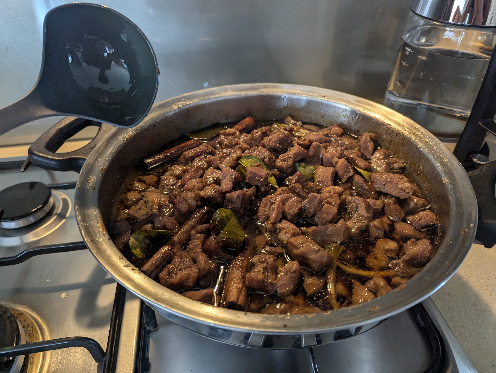
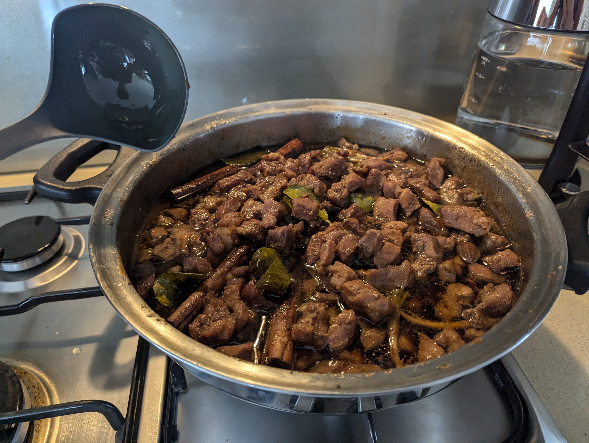

My Cooking Story
It all started when I first saw my parents cooking at age 5. Since then, I've been inspired to learn my family's delicious recipes in a mission to conquer the kitchen, one recipe at a time!
From disastrous steaks to restaurant-worthy stir-fry dishes, every mistake has been a lesson and every success a celebration.

Culinary Milestones

 

First Perfect Caramelised Pork Stew
After 3 attempts, I finally achieved the perfect sweet, savoury taste without turning it into mush!

Homemade Thai Red Curry Mastery
Developed my family's signature Red Curry recipe with just the right amount of heat and umami.


Stir-Fry Technique Acquired
Learned to stir-fry my first few dishes for family dinner -- it tasted great! And I could apply it to other dishes!
Recipe Highlights
Garlic Pork - Moo Kratiem / Moo Tod Kratiem
My go-to recipe for an easy, delicious meal
Key Ingredients:
Sourdough Bread
My pandemic baking project turned obsession
Key Ingredients:
My Kitchen Adventures + Bonus Food


Kitchen Wisdom
Patience with Heat
Learning to control temperature was a game-changer. Low and slow often wins the race!
The Power of Balance
Sweet needs salty, fat needs acid. Understanding balance transformed my dishes.
Cooking with Love
The secret ingredient is always joy. Food tastes better when made with happiness.